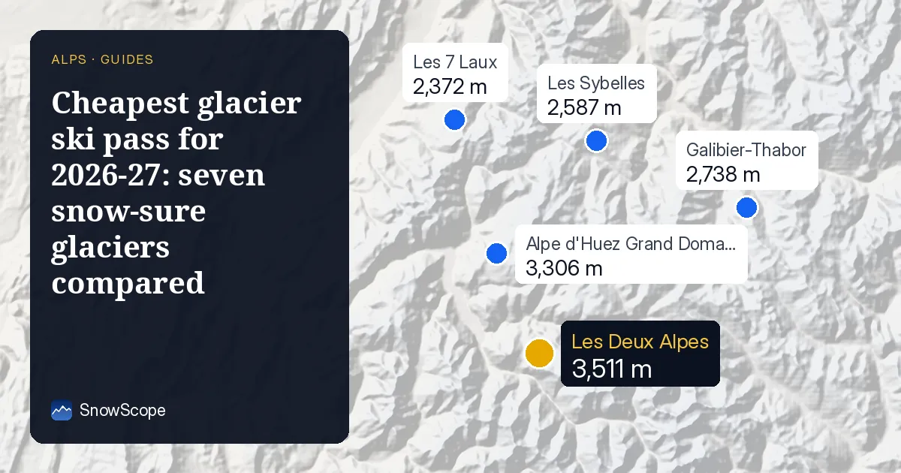

Cheapest glacier ski pass for 2026-27: seven snow-sure glaciers compared
In November and early December, a glacier is the safest place to spend money on a ski pass. Of the seven glaciers we compared, Les 2 Alpes and the Mölltaler Gletscher are the cheapest at 68 and 69 EUR for an adult day, and the Mölltal one also has the deepest usual December snow of the group: 118 cm at mid-mountain.
See the live snow forecast for Les Deux Alpes in the SnowScope appSnow depth, powder alerts and the 3D map, free.
Seven glaciers, from 68 EUR to 86 CHF
Les 2 Alpes sells its Grand Domaine day pass for 68 EUR with the flexible Freedom ticket, and only 42 EUR on its opening weekend, 28 and 29 November 2026. The Mölltaler Gletscher in Carinthia follows at 69 EUR in low season, although that rate comes from its latest published list, the one of 2025-26, so check it before you go.
The Zugspitze, Germany's only glacier ski area, costs 70.5 EUR online. Kitzsteinhorn above Kaprun charges 74 EUR in early season and 82 EUR in main season. Pitztal keeps one price all winter, 77 EUR, and so does Hintertux at 82 EUR. Saas-Fee in Switzerland closes the list at 86 CHF.
Which glaciers really have the snow
Not every glacier ski area is high everywhere. We looked at mid-mountain in our snow history of 46 past winters. The Mölltaler Gletscher, at 2593 m, usually has 118 cm in December and 23 weeks a winter with at least 50 cm in 9 winters out of 10. Pitztal, at 2576 m, has 82 cm and 22 such weeks. Saas-Fee has 68 cm and 21 weeks, Les 2 Alpes 77 cm and 20 weeks.
Hintertux and the Zugspitze both reach 15 snow-sure weeks, with 53 cm and 56 cm in a usual December. Kitzsteinhorn is the surprise: its mid-mountain sits lower, at 1894 m, and holds 41 cm in December with 11 snow-sure weeks. The glacier at the top is reliable, but the long run down to Kaprun often is not in early winter.
Best value by trip
For the lowest price with the most snow, the Mölltaler Gletscher wins in Austria: 69 EUR and the deepest snow of the seven. It is a smaller area with 21 km of runs, so one or two days are enough. Pitztal is the high-altitude pick for strong skiers, with lifts up to 3424 m and the same price every day.
In France, Les 2 Alpes is hard to beat in late November: 42 EUR on the opening weekend, lifts up to 3511 m and 108 km of runs once the whole area opens. The Zugspitze makes sense from Munich for a single day, and Saas-Fee is the choice if you want Swiss snow and can live with the franc.
Glacier skiing in early winter: what to expect
In November, most glaciers open only a few runs at the top, and you usually ride a lift back down. The snow is often firm in the morning and the days are short, so start early. Strong wind can close the highest lifts, and the cold at 3000 m is much harsher than in the valley.
Off the marked runs, glaciers have crevasses hidden under fresh snow. Never leave the piste without a guide and check the avalanche bulletin of the region before you go.
Book the stay with the pass
An early-season weekend is cheaper if you sleep in the valley: Flattach under the Mölltaler Gletscher, the Pitztal villages below the glacier, or the Tux valley. The map in this article shows stays under 130 EUR a night near the four glaciers we recommend, for the weekend of 27 to 29 November 2026.
Prices on the map change with the dates you choose, and the lift prices can change during the winter. Buy on the official site of each glacier.
Tips for skiers
- Cheapest and snowiest: Mölltaler Gletscher, 69 EUR and 118 cm in a usual December at 2593 m.
- Opening weekend deal: Les 2 Alpes at 42 EUR on 28 and 29 November 2026.
- Kitzsteinhorn: great at the top, thin at the bottom in early winter.
- Never leave the marked runs on a glacier without a guide.
More maps (external sites)
References and credits
- Les 2 Alpes, official ski pass shop, prices 2026-27 www.skipass-2alpes.com/en/pricing
- Les 2 Alpes, official ski pass shop, opening weekend offer www.skipass-2alpes.com/fr/forfaits/ski
- Mölltaler Gletscher: official lift-pass prices (2025-26), checked 13 November 2026 www.moelltaler-gletscher.at/en/price-list/winter/moelltaler-gletscher
- Zugspitze: official lift-pass prices (2026-27), checked 13 November 2026 zugspitze.de/prices
- Kitzsteinhorn (Kaprun): official lift-pass prices (2026-27), checked 13 November 2026 www.kitzsteinhorn.at/en/tickets-prices/ski-board
- Pitztaler Gletscher: official lift-pass prices (2026-27), checked 13 November 2026 www.pitztaler-gletscher.at/media/pt_price_winter_26_27.pdf
- Hintertuxer Gletscher: official lift-pass prices (2026-27), checked 13 November 2026 www.hintertuxergletscher.at/en/tickets-rates/tickets-rates/rates-hintertux-glacier/
- Saas-Fee/Saastal, official ski pass prices 2026-27 www.saas-fee.ch/en/winter-in-the-saas-valley/ski-pass-prices/saas-fee
About these numbers
Snow numbers: SnowScope snow history, 46 past winters (1980-81 to 2025-26) at three heights of the resort, a model of the past corrected for height (an estimate for an area, not resort reports). Lift, run and access facts: the sources listed below, checked on the date shown.
Cite this report
For research, teaching or the press: the numbers and charts are free to reuse under CC BY 4.0 with this citation.
SnowScope (2026), Cheapest glacier ski pass for 2026-27: seven snow-sure glaciers compared, https://snowscope.app/blog/en/2026/11/cheapest-glacier-ski-pass-2026-27-snow-sure.html, accessed 2026-11-19
SnowScope (Atlas Labs). (2026, November 19). Cheapest glacier ski pass for 2026-27: seven snow-sure glaciers compared. SnowScope snow reports. https://snowscope.app/blog/en/2026/11/cheapest-glacier-ski-pass-2026-27-snow-sure.html
BibTeX
@misc{snowscope2026cheapestglacierskipass20,
author = {{SnowScope (Atlas Labs)}},
title = {Cheapest glacier ski pass for 2026-27: seven snow-sure glaciers compared},
year = {2026},
month = nov,
howpublished = {\url{https://snowscope.app/blog/en/2026/11/cheapest-glacier-ski-pass-2026-27-snow-sure.html}},
note = {Published 2026-11-19 14:07 UTC; accessed 2026-11-19}
}· CC BY 4.0 · Methods, data and tools →
Les Deux Alpes: snow and temperature by height, this winter vs last (tools) →
Follow Les Deux Alpes
Free: a message when fresh snow is coming, and the forecast every morning.
More snow reports

We rank French ski resorts by December snow odds and checked pass prices, starting from 36.00 EUR for an adult day pass in Les Karellis.

On 4 November, Les Deux Alpes has 45 centimetres at the summit but zero at the base—an extreme early-season height gap.

German Alps show just 43% of normal snow depth across tracked resorts on 16 November, well behind schedule as the season opens.